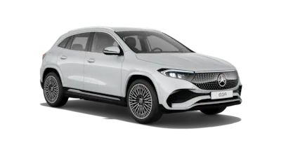
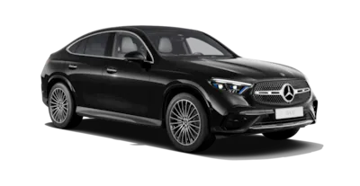
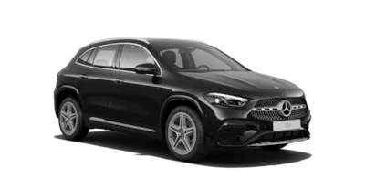
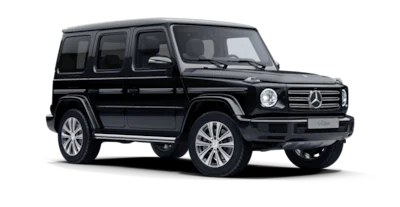

EQA
Tamamen elektrikli EQA’in dış mekanı.
Modern lüks sportif formda. Siyah-krom detaylara sahip radyatör kaplaması ve ön ve arkada led ışık bandı, panoramik sunroof veya LED yüksek performanslı farlar gibi diğer öne çıkan özellikleri de dahil olmak üzere EQA’in dış mekan tasarımının öne çıkan özellikleri hakkında daha fazla bilgi alın.
Tamamen elektrikli EQA’in iç mekanı.
İç mekanı ambiyans aydınlatması ve çeşitli süslemeler ile zevkinize göre kişiselleştirebilirsiniz. Konfor koltukları ve çok fonksiyonlu spor direksiyon simidi, sürüşünüzü son derece konforlu hale getirir. EQA'in iç mekanda öne çıkan özellikleri hakkında daha fazla bilgi alın.
GLC Coupé
Yeni GLC Coupé'nin dış tasarımı.
Yeni GLC Coupé, AMG tasarım konseptinin kendine özgü karakteri ile oldukça çekicidir. İkonik Mercedes-Benz Coupé tasarımını sportif ve lüks bir SUV olarak ortaya koyar. Etkileyici tasarım vurgularını birçok heyecan verici ayrıntıda bulabilirsiniz. Duyusal açıdan net tasarımı ve ince düşünülmüş teknik detayları sayesinde yeni GLC Coupé, her tip yola hakim olduğunu gösterir.
Yeni GLC Coupé'nin iç mekanı.
AMG tasarım konsepti, yeni GLC Coupé'nin birinci sınıf sportifliğini net bir şekilde ortaya koyar. En yüksek kaliteli deriye kadar sağlanan koltuk döşemeleri, dokunmatik merkezi medya ekranı Burmester® surround ses sistemi ile tüm duyular için ikna edicidir.
GLA
Yeni GLA'nın dış tasarımı.
Yeni GLA ilk bakışta etkileyiciliğini orataya koyar: Elmas görünümlü radyatör ızgarasına ve MULTIBEAM LED teknolojili farlara[2]sahip ön kısım otomobilin seçkinliği yansıtırken, panoramik tavan ve 20" çok kollu AMG tasarımı hafif alaşım jantlar [2]eşsiz bir sürüş konforu sunar. Yeni arka tasarım, çarpıcı egzoz çıkışı süslemeleri ve tamamen LED arka farları ile dinamik zarafetini yansıtır. Zarif izlenim, yeni renk seçeneği metalik spektral mavisi ile tamamlanır[2].
Yeni GLA’nın iç mekanı.
Yeni GLA’nın yüksek kaliteli tasarımı, geniş alan izlenimi ve yenilikçi sürüş konforu ile büyüleyici bir iç mekan atmosferi sunar. İster direksiyon simidi, ister yeni tasarlanmış orta konsolu, ister 64 renkli ambiyans aydınlatması olsun[2], her ayrıntı estetik tasarımı ve düşünülmüş fonksiyonu ile etkileyicidir. Böylelikle yeni MBUX multimedya sistemi tamamen isteklerinize uyarlanırken, yeni Burmester® surround ses sistemi[2]ile yoğun bir ses deneyimi vaat eder.
G-Serisi
G-Serisi'nin dış mekanı.
Üç farklı tasarım konseptine sahip G-Serisi'nin dış mekan tasarımında öne çıkan özellikleri keşfedin: PROFESSIONAL dış mekan tasarım konsepti, EXCLUSIVE dış mekan tasarım konsepti ve AMG dış mekan tasarım konsepti. Sağlam ön kısım, arka kapıda açık stepne veya ayırt edici davlumbaz kaplamaları gibi diğer öne çıkan özellikler hakkında daha fazla bilgi edinin.
G-Serisi'nin iç mekanı.
G-Serisi'nin iç mekanı standart donanım kapsamında bile geniş ekranlı ön konsol ve ambiyans aydınlatması gibi kapsamlı özellikler sunuyor. Ayrıca, koltukları, döşemeleri ve diğer donanım özelliklerini kendi isteklerinize göre birleştirmenize olanak tanıyan opsiyonel EXCLUSIVE veya SUPERIOR iç mekan tasarım konseptine de sahipsiniz.